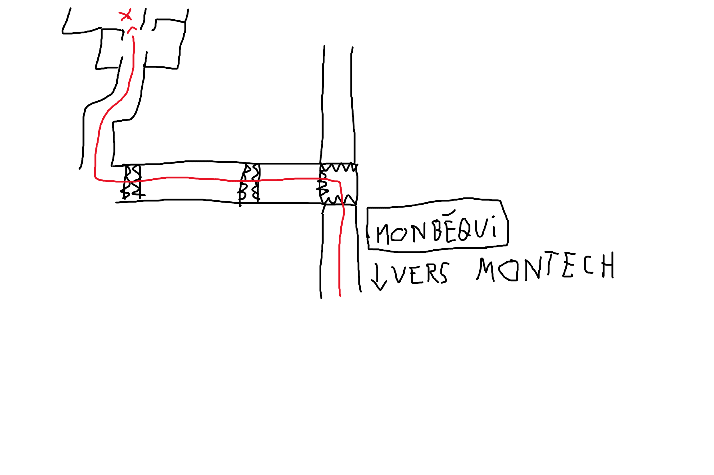

Pour aller chez le type qui nous invite, Théo dirait: "En arrivant à Monbéqui en direction de Grisolles (en partant de Montech), entrez dans la petite bourgade monbéquinoise (pas monbéquienne Keryan). En étant sur le gros dos d'âne tournez à gauche. Passez ensuite deux plus petits dos d'ânes puis juste après le second tournez à droite. Vous arriverez alors dans le lotissement des jardins de Monbéqui. Poursuivez votre trajet afin d'arriver au bout du lotissement. Vous apercevrez au fond une maison ainsi qu'un abri à voiture jaune, un portail blanc, ainsi qu'un chien noir si vous êtes arrivés trop tôt ou si j'ai oublié de le rentrer dans le garage. La compagnie de logistique des voies de communication de la commune de Monbéqui vous souhaite agréable séjour.
